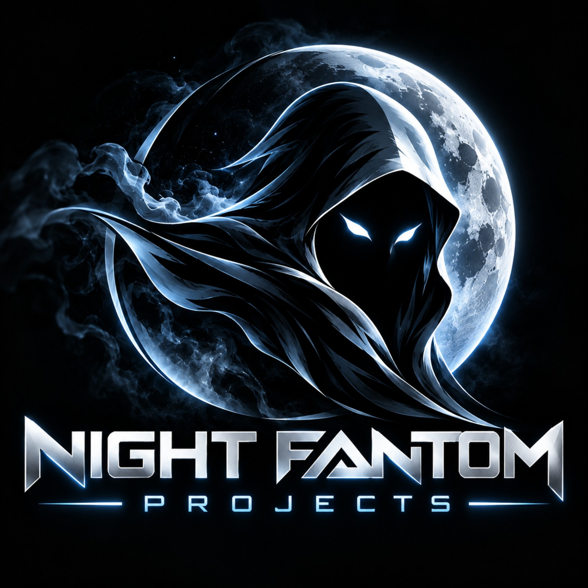

INDEPENDENT BLOCKCHAIN DEVELOPMENT
BUILDING BEYOND THE BLOCKCHAIN
Night Fantom Projects develops digital assets and explores decentralized technology, creative ecosystems, and community-driven innovation.

DEVELOPMENT
TECHNOLOGY
ECOSYSTEMS
INNOVATION
OUR FIRST PROJECT
MEET HOODRAT
HOODRAT
$HOODRAT · ROBINHOOD CHAIN
A community-driven cryptocurrency combining bold meme culture, distinctive branding, and a growing decentralized community.
Explore the project, follow announcements, and connect with the community.
FIND OUR COMMUNITY →
ABOUT NIGHT FANTOM PROJECTS
INNOVATION FROM THE SHADOWS
Night Fantom Projects is an independent cryptocurrency and blockchain development company focused on creative digital projects and emerging decentralized technologies.
OUR MISSION
Build distinctive projects that bring together creativity, functionality, and community participation—while communicating progress openly.
BLOCKCHAIN DEVELOPMENT
RESEARCH. DEVELOP. DEPLOY.
Our interests include digital assets, blockchain infrastructure, decentralized ecosystems, and experimentation with emerging technology. Features under exploration are not presented as completed products.
DEVELOPMENT & UPDATES
FOLLOW OUR PROGRESS
Project milestones, HOODRAT community announcements, and company news will appear here as they are confirmed.
Check our official social channels for the latest verified announcements.
CONNECT WITH US
JOIN THE CONVERSATION
Follow Night Fantom Projects and HOODRAT through our official channels.